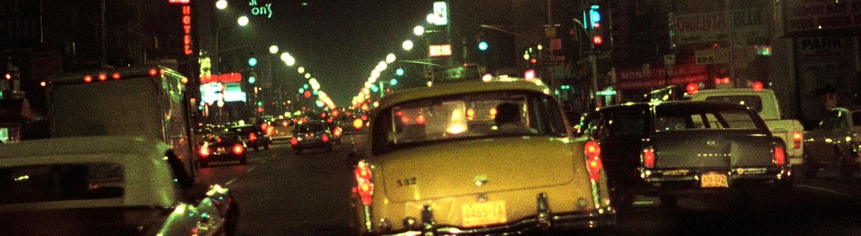

Served all night from
Hot open roast beef sandwich2.25
Rare slices warmed in brown gravy on thick white toast, more gravy poured over. Buttered mashed potatoes and peas.
Two eggs any style1.10
Home fries and buttered toast, rye or white.
Thick-cut fries.44
Cooked twice in hot oil until crisp, salted hard. White vinegar on every table.
Cheddar, saltines and pickles.85
Thick slabs of the sharp stuff, dill spears, a sleeve of crackers and hot English mustard.
Chicken noodle soup.60
From the kettle, with oyster crackers.

Uptown at three in the morning, from the front seat.
Peach brandy bread pudding.76
Buttered white loaf layered with brandied peaches, baked in vanilla custard. Served warm.
Apple pie, melted yellow cheese.65
Served warm, a slice of American on top.
Coffee or tea.25
Bottomless after midnight.
Night man's coffee1.25
Strong drip with a nip of peach brandy and brown sugar, a spoonful of soft whipped cream on top.